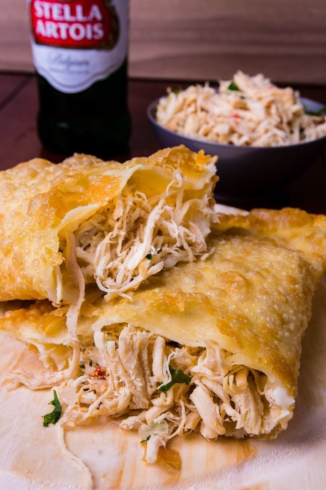
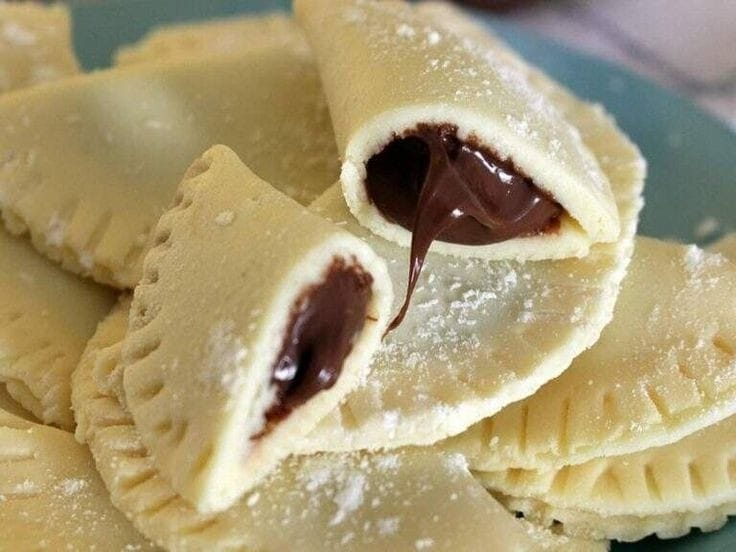

Tamanhos
Temos pastéis com recheios diferentes e feitos com criatividade, principalmente os pastéis doces, que são algo mais elaborado. Os pastéis, são fritos na hora, com recheios frescos e com a data de validade válida. Temos vários tamanhos e sabores, os tamanhos serão: G (grande) M (médio) P (pequeno).
Sabores
Os sabores salgados dos pastéis são: •Frango (que é um dos sabores tradicionais). •Calabresa com queijo. •Hambúrguer( é um pastel, que contém uma carne de hambúrguer nele). •Á portuguesa( é um pastel, que contém: presunto picado, ovo cozido picado, queijo ralado , cebola picada, sal e temperos). •Linguiça Toscana e queijo coalho. 
E os doces são: •Leite ninho com Nutella esse pastel, já contém a massa doce, que é feita com leite ninho e o seu recheio é a verdadeira Nutella. •Ovomaltine •Leite condensado (que é o leite condensado "moça", que em sí não é o mistura Lacta). •Goiabada, banana e queijo. •Brigadeiro com damasco e nozes. •Paçoca com doce de leite. 
Entre em contato pelo
Whatsapp-(+55 75 8148-8505)